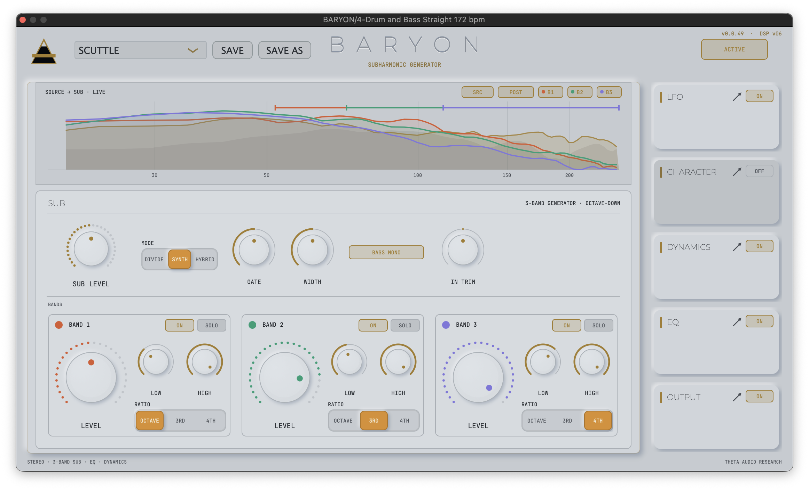
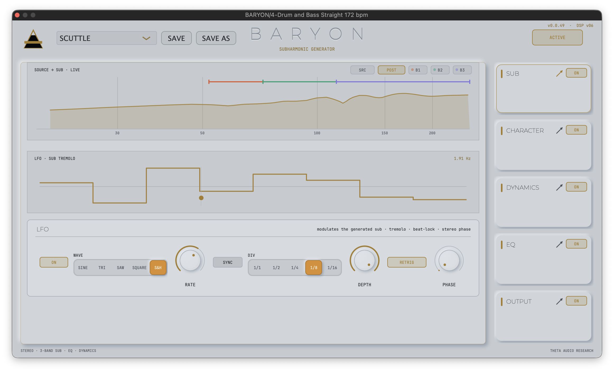
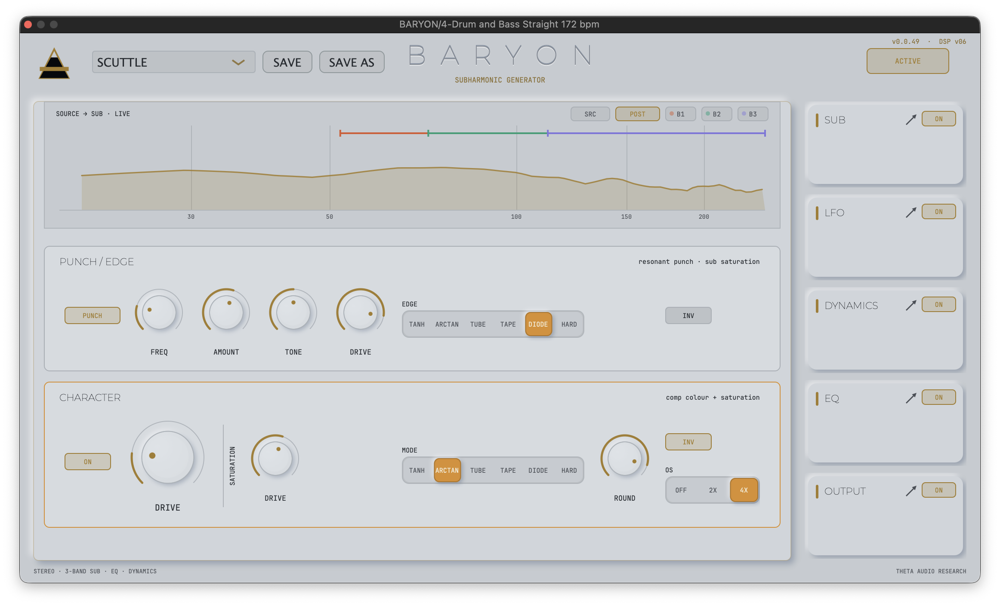
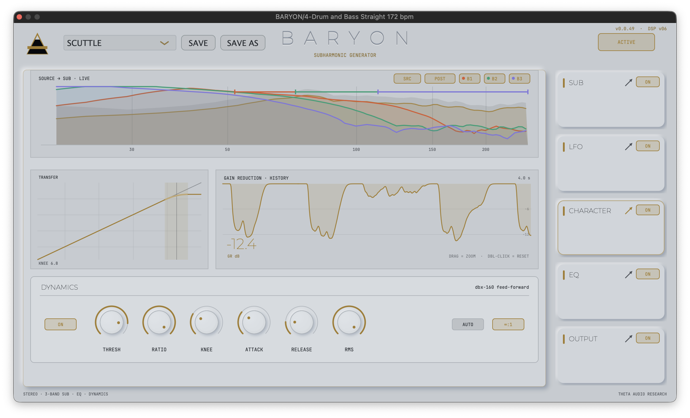
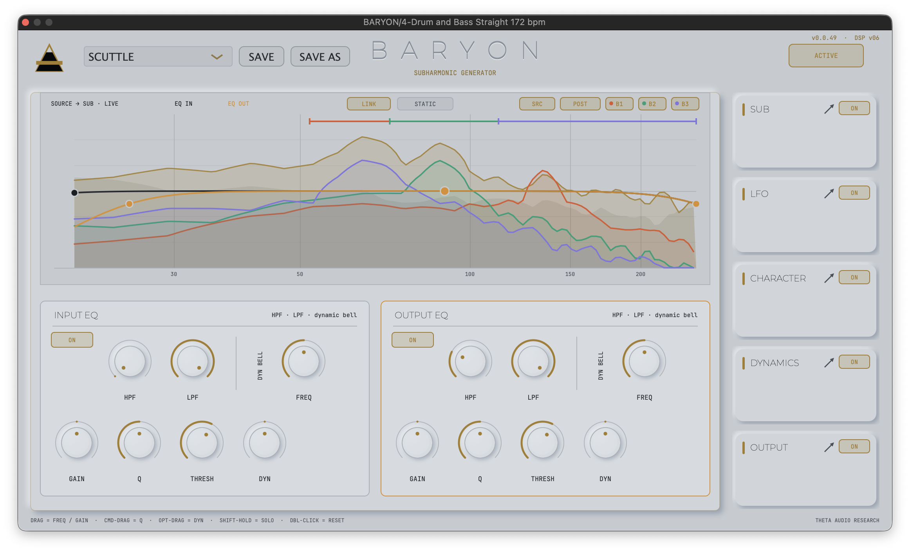
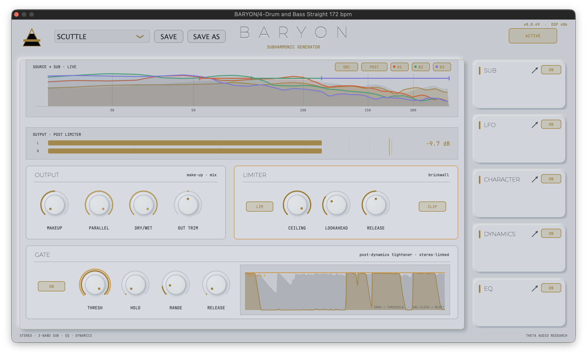

Add mass. Baryon generates, shapes, and animates the sub-bass your source only hints at. BARYON listens to the bass you have and generates the octave you can feel — three independent bands of pitch-tracked subharmonics, shaped by an analog-modeled saturation stage, a dbx-style compressor, a dual dynamic EQ, a beat-locked LFO, and a gated, limited output section. It is a complete low-end instrument in one window, built on DSP that is measured, unit-tested, and torture-certified rather than merely tuned by ear.
Chassis is undergoing low-frequency calibration. Operational parameters include zero-dive architecture featuring portable user library files (.baryon).
NOTIFY_ME_AT_LAUNCHTHE_INTERFACE_PROTOCOL
BARYON's interface is a focus rack: six modules — SUB · LFO · CHARACTER · DYNAMICS · EQ · OUTPUT — live as cards on the right. Click one and it takes the stage; everything else stays one click away. No menu diving, no hidden tabs, and the window never changes size.
Above the stage sits the persistent live display: a real-time spectrum of the 20–250 Hz region that stays with you on every page. Five layers, each on its own clickable chip — SRC (what's coming in), POST (what's leaving, in gold), and B1 / B2 / B3 (each band's own generated sub in its band color). The three band crossover spans ride along the top, so you always see where the generator is listening. Solo a band and its trace isolates. Toggle the plugin and POST collapses onto the source. You never have to imagine what BARYON is doing to your low end — it is drawn, live, at all times.
FOCUS_RACK_MODULES

The heart of the plugin: a three-band subharmonic generator with three generation philosophies, selectable per instance.
- · DIVIDE — The classic dbx approach. The source band is squared and fed to a flip-flop that toggles on every rising zero crossing, producing a square wave at exactly half the input frequency. Heavily filtered, it becomes the fat, gritty analog sub of the original hardware.
- · SYNTH — Waveform modeling. BARYON estimates the dominant pitch of each band from its zero-crossing period and runs a clean, continuous-phase sine at the divided frequency. Pure, deep, and modern.
- · HYBRID — The grit of the divider blended with the body of the sine.
- · Chassis Architecture — Each of the three bands gets its own color-coded cell: a hero LEVEL knob with a live LED ring, ON and SOLO pills, LOW/HIGH crossover controls, and a per-band RATIO selector — octave down, a third, or a fourth — so one band can hold the octave while another adds a deeper foundation. The generator row above carries the master SUB LEVEL, MODE, GATE (keeps the generator from droning on bleed and noise), WIDTH, BASS MONO (collapses the low end for club-safe mono), and IN TRIM.
The Torture Suite Tracker: An eleven-test torture suite hammers the engine with note changes, pitch bends, kick transients riding the bass, harmonic-heavy sources, dyads, and near-silence. It locks in 13.6 ms from true silence, retunes instantly on note changes, tracks continuous bends at half frequency, and does not flip an octave on harmonic-rich basses. Wrong-octave content measures more than 200 dB below the fundamental.

A dedicated modulator that breathes life into the generated sub — tremolo applied to the sub only, never your dry signal.
- · Waveform Array — Five waveforms: SINE, TRI, SAW, SQUARE, and S&H (a fresh random level drawn and held each cycle, for rhythmic random chops). Rate runs free (0.02–8 Hz) or SYNC to host tempo with divisions from 1/1 to 1/16.
- · Position RETRIG — In sync mode the LFO's phase is derived from the host's song position every block, so it stays beat-locked through loops, relocates, and punch-ins — every pass of a two-bar loop lands identically. Every waveform passes through a de-click smoother so the modulation never ticks.
- · PHASE Orbit (0–180°) — Offsets the right channel's LFO: the sub begins to orbit the stereo field, and at 180° the channels move in perfect anti-phase — a widening motion no static tool can produce.
- · Display Mapping — Shows the selected shape at your depth over a full-scale ghost, with a gold cursor riding the curve at the engine's actual published phase and value — including the true random levels of S&H — plus a hollow second cursor marking the right channel when PHASE is engaged, and a readout of the exact Hz your sync setting resolves to.

Two stages of harmonic identity, laid out on shared columns so the eye never hunts.
- · PUNCH / EDGE Engine — Shapes the generated sub itself: PUNCH is a resonant high-pass with FREQ and AMOUNT that carves a tight, kick-friendly knee into the very bottom; TONE rolls the sub's top; DRIVE feeds a six-mode EDGE saturator — TANH, ARCTAN, TUBE, TAPE, DIODE, HARD — with polarity INV for asymmetric bite.
- · Global Color Stage — A hero DRIVE pushes the compressor's colour stage, and the master SATURATION section offers the same six shapes with its own DRIVE, a ROUND control for softening the curve, INV, and switchable oversampling (OFF / 2X / 4X) to keep aggressive settings alias-free.
- · Headroom Preservation — Dedicated DC blockers sit at the end of the nonlinear chain. Asymmetric shapes generate DC offset that silently eats headroom on a sub plugin — BARYON drains it in under a second while leaving 20 Hz programme within 0.095 dB. Measured, not assumed.

ANANKE is the uncompromised compression engine extracted from the ROGERIAN Dialogue Suite and configured as a focused, single-purpose processor. Voiced for dialogue yet equally at home tightening drum busses, vocals, or master outputs, it represents the primordial force of necessity and constraint.
- · TRANSFER Display — Draws the actual gain law — the same code the audio runs — on a 10 dB grid: threshold marker, the OverEasy soft-knee region as a gold band with the knee arc highlighted, and the ∞:1 hard-limit curve when engaged.
- · GAIN REDUCTION History — Hangs from the ceiling: the shaded area is the gain removed, sampled from the audio thread every 2.5 ms so the trace reads as a smooth line at any zoom. Drag to zoom the window from 1 to 8 seconds; a large live GR readout counts the decibels.
- · Parameter Suite — THRESH, RATIO, KNEE, ATTACK, RELEASE, and RMS — the detector's averaging window from 1 to 50 ms, the control that decides whether the compressor grabs transients or levels notes (and the reason deep sustained bass compresses cleanly instead of rippling). AUTO release and an ∞:1 switch complete the set.

Focus the EQ and the live display grows into a full editing surface: both EQ curves drawn directly over the spectrum they're shaping.
Two independent processors — EQ IN (before the generator, shaping what BARYON listens to) and EQ OUT (after, shaping what it delivers) — each with a 24 dB/oct high-pass and low-pass plus a dynamic bell with FREQ, GAIN, Q, THRESH, and DYN range.
- · Direct Manipulation Node Grammar — Drag a node for frequency and gain, Cmd-drag for Q, Opt-drag to set the dynamic range, Shift-hold for momentary band solo (release Shift, solo's gone), double-click to reset any filter to neutral. Interaction grammar is printed in the footer.
- · Dynamic Animation — The dynamic bells animate with the music: a faint REACH line marks the full configured travel and a haloed LIVE line rides the current position, display-smoothed so hits land instantly and ease back musically.
- · Global Architecture — LINK mode runs one detection path on the mono sum so both channels' bells always move identically (a one-sided hit can never tilt your stereo image), while STATIC turns the dynamics off entirely to form a conventional EQ.

The final say. A post-limiter L/R output meter spans the top — gold bars that turn amber past the limiter ceiling, a live ceiling marker tied to the CEILING knob, and a peak readout in dB.
- · Gain Staging Zone — Handles compressor MAKEUP, PARALLEL (compressor dry/wet for New-York-style weight), master DRY/WET, and OUT TRIM.
- · Limiter Rail — A stereo-linked, look-ahead brickwall — CEILING, LOOKAHEAD, RELEASE, and a CLIP mode — with its latency (and the oversampler's) correctly reported to the host, so BARYON never smears against the rest of your session.
- · Dual-Gate Post-Dynamics Tightener — Compression and saturation raise tails; the gate sits after both and before the limiter, where "tight" actually happens. A fast fixed 0.3 ms attack preserves transients; HOLD stops chatter on decaying hits; RANGE sets how far closed it goes — at −80 dB it chops, at −15 dB it just leans on the tails; 3 dB of built-in hysteresis means it never flutters.
- · Draggable Gate Display — The THRESH knob wears the incoming level as a live ring, so you park the pointer exactly where the kicks peak and the bleed doesn't — and the gate view beside it scrolls three seconds of history: grey is what came in, gold is what got through, with the threshold line draggable right on the display. The detector runs even while the gate is off, so you can set it visually before you ever engage it.
MEASURED_NOT_MARKETED
- Build Verification Suite 77 assertions run automatically on every single build, including the eleven-test generator torture suite.
- Generator Attack Onset from silence locks in 13.6 ms to half level; silence in results in literal zero output.
- Octave Stability Wrong-octave content on a pure tone measures > 200 dB down; no octave flip on harmonic-rich basses.
- Gate Ballistics Opens in 1.2 ms, RANGE floor accurate to 0.05 dB, absolute zero threshold flutter.
- Modulation Smoothness LFO square chops parameter maps maintain a maximum per-sample gain step of 0.007 — mathematically click-free.
- Anti-Phase Parameter 180° stereo phase calculation features channel gains anti-phase with gL + gR pinned at 1.000.
TECHNICAL_SPECIFICATIONS
- Type Matrix 3-band subharmonic generator with dynamic EQ, compressor, saturation, LFO, gate, and look-ahead limiter
- Signal Flow IN TRIM → Input Dynamic EQ → 3-Band Generator (+LFO) → Mix → Output Dynamic EQ → Compressor → Saturation (up to 4× oversampled) → DC Block → Gate → Look-ahead Limiter → OUT TRIM
- Latency Engine Fully reported to the host (limiter look-ahead + oversampling), automatically compensated.
- Formats VST3 · AU · Standalone [macOS Apple Silicon native compilation]
- Parameter Interaction Fixed 1116 × 640 footprint; double-click resets knobs, hold Shift for fine adjustment, and trailing value bubbles follow every drag.